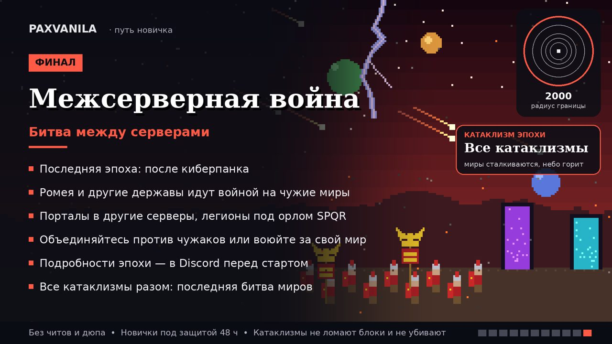
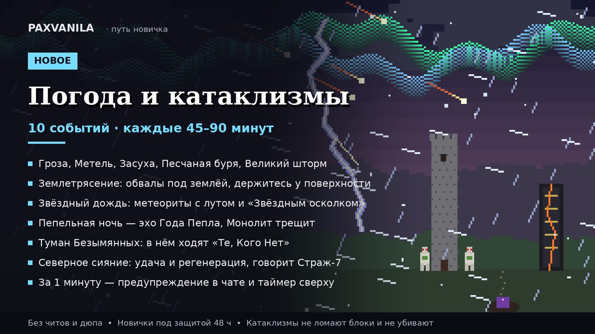

Читать по порядку: Предтечи → Средние эпохи → Поздние эпохи (будущее мира: от роботов 1962 года до Луны, Марса и звёзд). Катаклизмы — отдельная летопись.

Что было до Ромула

Летопись Ромулов, 0–1962

После 1962 года: роботы и ИИ, киберпанк, Межсерверная война, Луна, Марс, сфера Дайсона, звёзды и конец времён

Летопись Монолита

Три записи из Дальнего сектора, 5000 блоков от 0, 0

Пролог к Хронике фронта: мир до этого мира, сервер ZAG533, День 517
Все фокусы, наследия, расы и народы, что брать до войны, готовые сборки